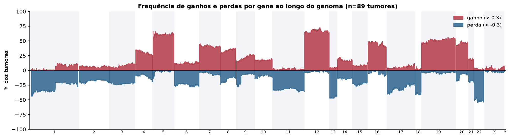
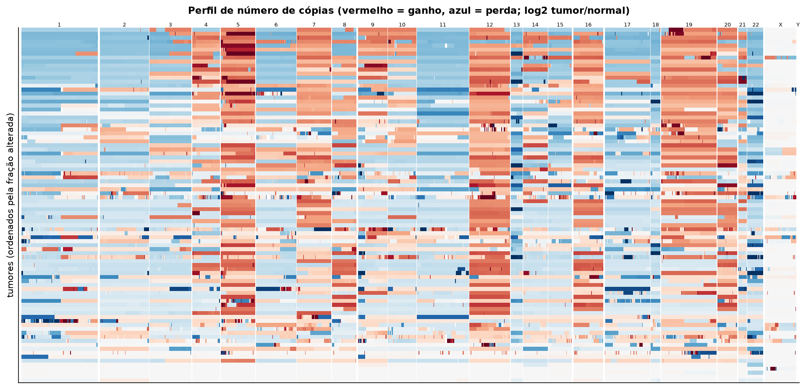
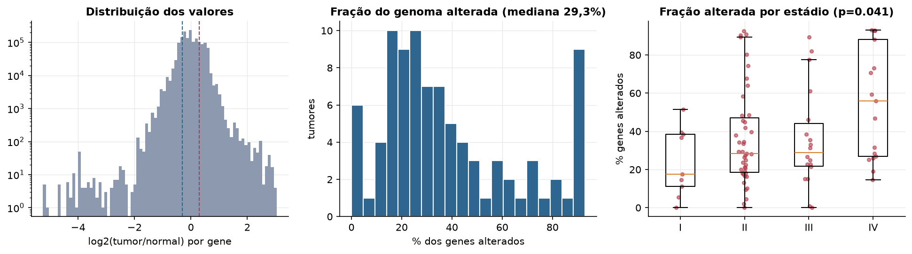
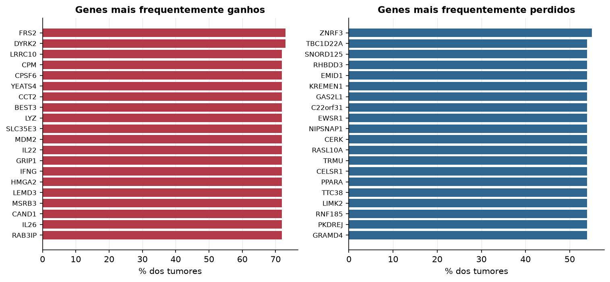

ACC · Número de cópias (CNV)
Affymetrix SNP6, segmentos whitelisted do PanCanAtlas · gerado em 21/10/2026 18:05
89tumores
17.738genes
29,3%fração alterada mediana
138segmentos/tumor (mediana)
Fonte: SNP6 whitelisted (PanCanAtlas); nível de gene calculado dos segmentos (hg19)
O valor por gene é o do segmento que cobre o meio do gene (log2 tumor/normal, hg19). Sem correção de pureza e ploidia: tumores com pouca célula tumoral têm valores atenuados. Para chamadas discretas (−2 a 2), use o GISTIC2 do PanCanAtlas ou o ABSOLUTE.
Principais resultados
- Mediana de 29,3% dos genes com ganho ou perda por tumor (limiares log2 de 0.3 e -0.3).
- O cromossomo com mais ganhos em média é o 12 (65,0% dos tumores por gene) e o com mais perdas é o 22 (46,1%).
- Genes mais ganhos: FRS2 (73%), DYRK2 (73%), LRRC10 (72%), CPM (72%), CPSF6 (72%), YEATS4 (72%). Genes mais perdidos: ZNRF3 (55%), TBC1D22A (54%), SNORD125 (54%), RHBDD3 (54%), EMID1 (54%), KREMEN1 (54%).
- Fração alterada por estádio: Kruskal-Wallis p=0.041.
Paisagem ao longo do genoma


Carga de alterações

Genes recorrentes

Top 25 genes por frequência de ganho
| gene | chrom | % ganho | % perda | média log2 |
|---|---|---|---|---|
| FRS2 | 12 | 73 | 1.1 | 0.445 |
| DYRK2 | 12 | 73 | 1.1 | 0.446 |
| LRRC10 | 12 | 71.9 | 1.1 | 0.428 |
| CPM | 12 | 71.9 | 1.1 | 0.428 |
| CPSF6 | 12 | 71.9 | 1.1 | 0.428 |
| YEATS4 | 12 | 71.9 | 1.1 | 0.428 |
| CCT2 | 12 | 71.9 | 1.1 | 0.428 |
| BEST3 | 12 | 71.9 | 1.1 | 0.428 |
| LYZ | 12 | 71.9 | 1.1 | 0.428 |
| SLC35E3 | 12 | 71.9 | 1.1 | 0.434 |
| MDM2 | 12 | 71.9 | 1.1 | 0.434 |
| IL22 | 12 | 71.9 | 2.2 | 0.42 |
| GRIP1 | 12 | 71.9 | 1.1 | 0.42 |
| IFNG | 12 | 71.9 | 2.2 | 0.422 |
| HMGA2 | 12 | 71.9 | 1.1 | 0.437 |
| LEMD3 | 12 | 71.9 | 1.1 | 0.447 |
| MSRB3 | 12 | 71.9 | 1.1 | 0.447 |
| CAND1 | 12 | 71.9 | 1.1 | 0.434 |
| IL26 | 12 | 71.9 | 2.2 | 0.42 |
| RAB3IP | 12 | 71.9 | 1.1 | 0.428 |
| DAZAP2 | 12 | 70.8 | 1.1 | 0.404 |
| BIN2 | 12 | 70.8 | 1.1 | 0.404 |
| KCNMB4 | 12 | 70.8 | 1.1 | 0.422 |
| PTPRB | 12 | 70.8 | 1.1 | 0.422 |
| CELA1 | 12 | 70.8 | 1.1 | 0.404 |
Top 25 genes por frequência de perda
| gene | chrom | % ganho | % perda | média log2 |
|---|---|---|---|---|
| ZNRF3 | 22 | 2.2 | 55.1 | -0.632 |
| TBC1D22A | 22 | 1.1 | 53.9 | -0.342 |
| SNORD125 | 22 | 2.2 | 53.9 | -0.343 |
| RHBDD3 | 22 | 2.2 | 53.9 | -0.343 |
| EMID1 | 22 | 2.2 | 53.9 | -0.343 |
| KREMEN1 | 22 | 2.2 | 53.9 | -0.518 |
| GAS2L1 | 22 | 2.2 | 53.9 | -0.343 |
| C22orf31 | 22 | 3.4 | 53.9 | -0.624 |
| EWSR1 | 22 | 2.2 | 53.9 | -0.343 |
| NIPSNAP1 | 22 | 2.2 | 53.9 | -0.357 |
| CERK | 22 | 1.1 | 53.9 | -0.341 |
| RASL10A | 22 | 2.2 | 53.9 | -0.343 |
| TRMU | 22 | 1.1 | 53.9 | -0.341 |
| CELSR1 | 22 | 1.1 | 53.9 | -0.341 |
| PPARA | 22 | 1.1 | 53.9 | -0.335 |
| TTC38 | 22 | 1.1 | 53.9 | -0.341 |
| LIMK2 | 22 | 2.2 | 53.9 | -0.353 |
| RNF185 | 22 | 2.2 | 53.9 | -0.353 |
| PKDREJ | 22 | 1.1 | 53.9 | -0.341 |
| GRAMD4 | 22 | 1.1 | 53.9 | -0.341 |
| GTSE1 | 22 | 1.1 | 53.9 | -0.341 |
| NF2 | 22 | 2.2 | 52.8 | -0.346 |
| MGAT3 | 22 | 1.1 | 52.8 | -0.332 |
| NEFH | 22 | 2.2 | 52.8 | -0.343 |
| THOC5 | 22 | 2.2 | 52.8 | -0.35 |